ESA SkyMed Demonstration Project
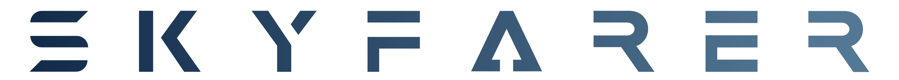
Skyfarer Ltd · Jun 2025 – Mar 2026

The European Space Agency (ESA) approached Skyfarer Ltd for a demonstration project, proving the potential for drones to transport NHS medical payloads between hospital roofs. When I joined the team as an intern, I primarily worked on this project, which involves implementing two subsystems: an automated rooftop droneport ("vertiport"), and a drone handling system (in which we modify the undercarriage of the drone to carry payloads).
This service aims to replace slower courier movements by road with BVLOS drones that reduces delays, increases delivery frequency, all while maintain high hygiene standards and infection control. What stands out about this particular project is that both subsystems manage dispatch, landing, and payload exchange without any human intervention. More information on SkyMed can be found here.
Subsystem A — Drone Handling System
Through meetings held with stakeholders from the ESA and NHS, we determined that the most important objectives for subsystem A included:
- →Weight (system must not exceed 10kg)
- →Stability of package in flight (given the fragile nature of medical equipment)
- →Modularity (the ability to be integrated into both VTOL and multi-rotor drone types)
Several ideas were sketched in Fusion. I had some prior CAD experience before starting; however, I had a short timeframe to learn how to effectively leverage Fusion's parametric modelling capabilities. I picked up the basic techniques (mirror, extrude, fillet, shell, etc.) from following a YouTube tutorial series by Product Design Online.
There are two parts to subsystem A: a component to hold the package, and an extension mechanism to raise/lower the package between the undercarriage and vertiport. To hold the package, I opted for a geared robotic gripper (Figure 1).
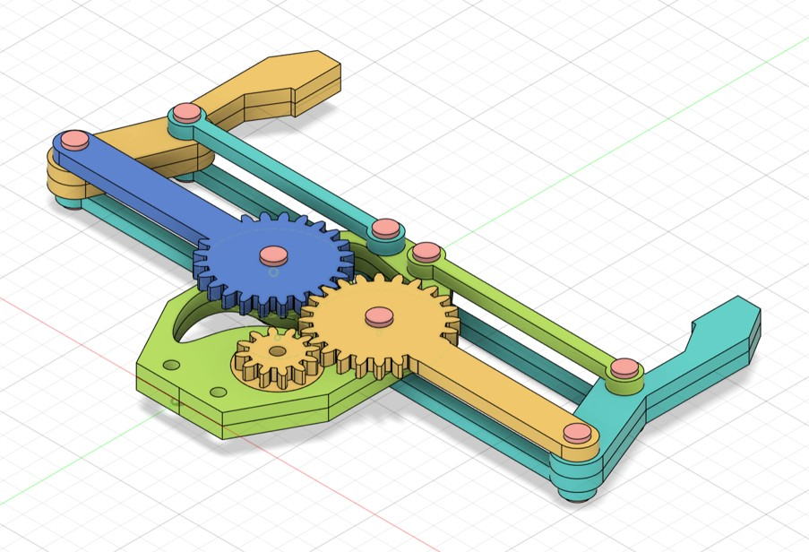
Figure 1: robotic gripper in (a) fully opened state and (b) fully closed state.
Next came the extension mechanism. Multiple concepts were drafted and assessed on trade-off comparison matrices. One of these was an electromagnetic (EM) winch cable. While its simplicity is favourable, I did not find this feasible due to the need for swing damping and the risk of EM interference with other parts of the project. Another idea was a linear robotic arm, but this suffers from being heavy and hard to integrate into the limited undercarriage space of the PW Orca VTOL.
We settled on a scissor lift (Figure 2) which I again designed in Fusion. Inspired by those found in IKEA warehouses, these are able to keep the robotic gripper & package stable in flight. They are also lighter than the robotic arm, with fewer parts, leading to lower maintenance costs. Scissor legs possess good compressive strength because when the lift raises/lowers, each leg mainly experiences axial compression & tension (not bending or shearing). The legs are able to distribute these compressive forces along their lengths, preventing a build-up of stress concentrations and avoiding failure by buckling. Since the whole mechanism distributes the load between multiple legs, no single leg bears the full weight, so the compressive stress per member is small.
The challenge with building these in Fusion is the numerous types of joint required. Whereas the aforementioned gripper only used revolute joints, the scissor lift additionally needs cylindrical & rigid joints. On my first attempt, I over-constrained the legs, so to fix this I systematically rebuilt the lift, testing each leg's degrees of freedom (using motion link studies) before combining all the parts to form the final model.
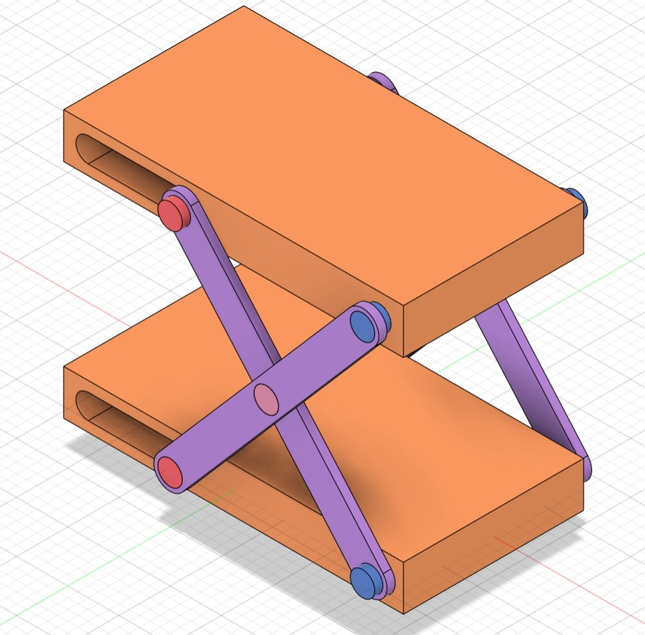
Figure 2: scissor lift extension mechanism in (a) fully opened state and (b) fully closed state.
To perform stress tests in Fusion, I first had to choose suitable materials. Provisionally, ABS plastic was chosen for the scissor legs, as PETG (our preferred option) wasn't available on Fusion. The book "Structures" by J.E. Gordon outlined the high specific strength of honeycomb sandwiches, citing their stiffness under compression and resistance to shearing. This is because the stress per face of the hexagons is low with the added benefit that the structure is lightweight as the core is mostly air. Inspired, I used honeycomb aluminium sheets reinforced with carbon fibre (strong chemical resistance) for the lift platforms, thus reducing their weight.
The gripper and lift were combined to form the final subsystem A solution (Figure 3).

Figure 3: subsystem A with gripper and lift fully extended, attached to an Orca drone model.
Subsystem B — Vertiport
This is more than just a standard helipad. Below the landing area, the package must travel downwards through the hospital roof, before being pushed horizontally via conveyor belt into a room where NHS staff can receive packages, as well as send them back up for dispatch.
The first iteration of a basic vertiport design is below (Figure 4). The purpose with this model is to illustrate the layout. The electronics can be stored in compartments between the top of the chute and just below the landing pad (not pictured).
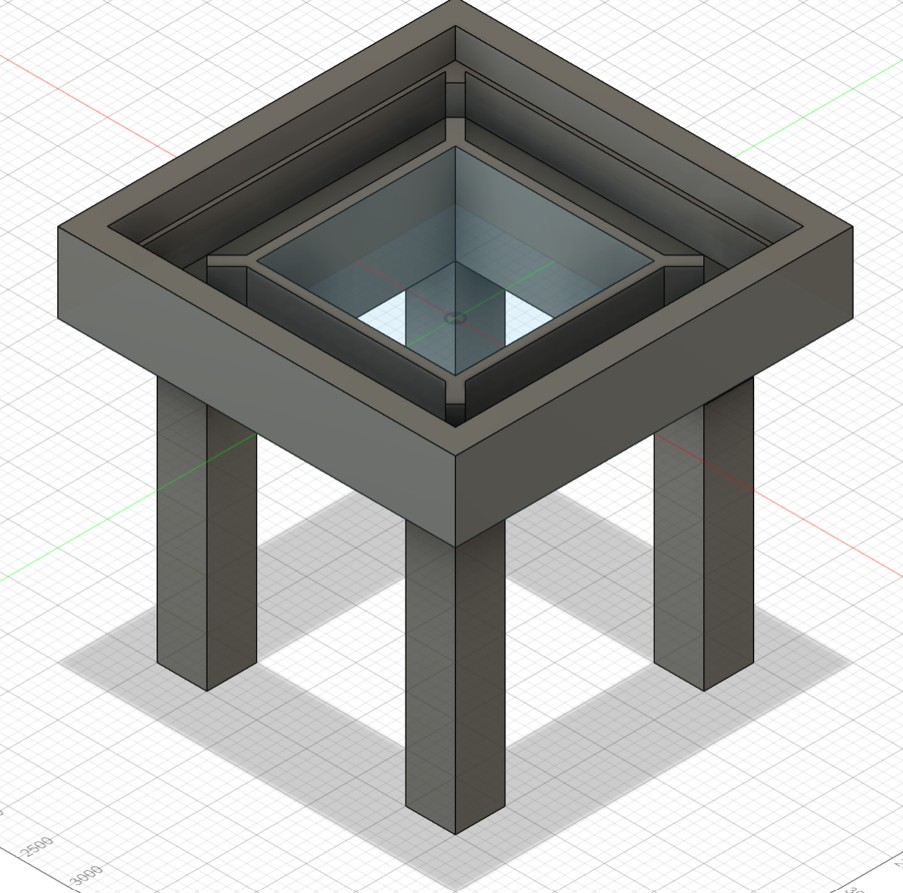
Figure 4: vertiport version 1.
The next version (Figure 5) introduced four red lights (LED strips were considered to improve visibility but were deemed too large), a landing pad (with four trapezium pieces at the top which can be removed to open the electronics housing), and shielding against the natural elements when not in use (using hinges to form a triangle shape when closed).
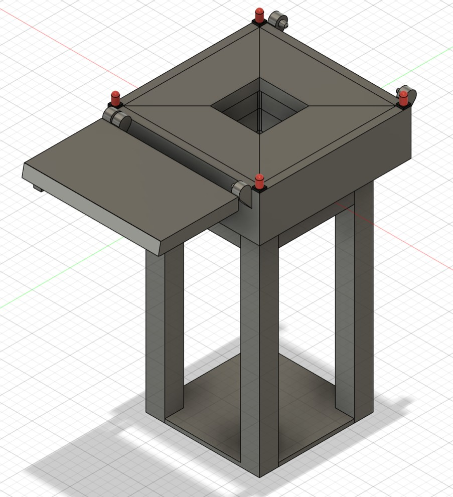
Figure 5: vertiport version 2. Half of the hinged shielding roof mechanism is shown.
Next, I needed to insert the aluminium profiles and their corresponding profile brackets in. This is shown in Figures 6 and 7 below. I also began designing the conveyor belt (Figure 8) to better display how the payloads will move along the vertiport.
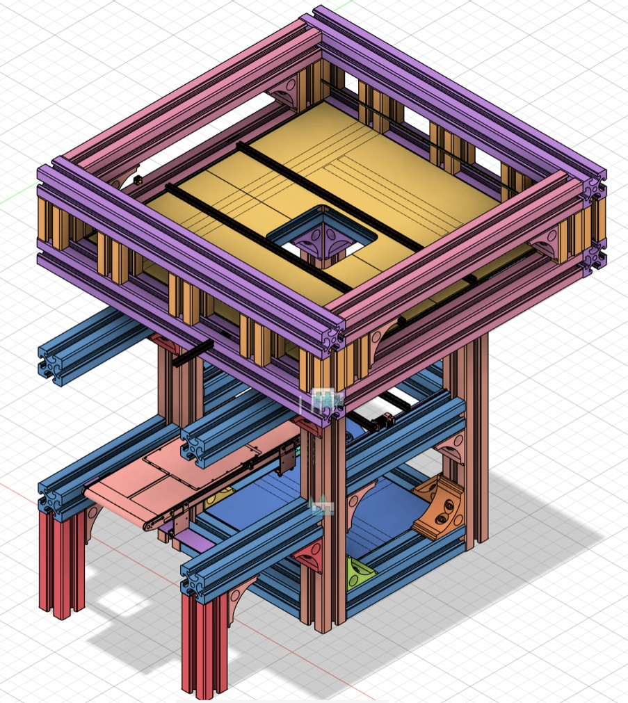
Figure 6: vertiport version 3.
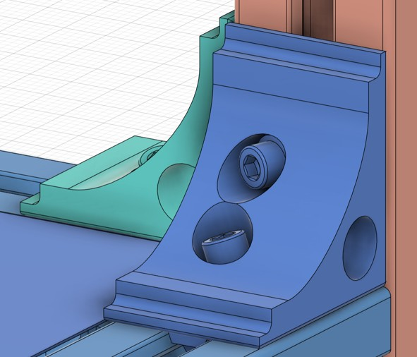
Figure 7: slotted profile bracket component inserted from the McMaster-Carr catalogue.
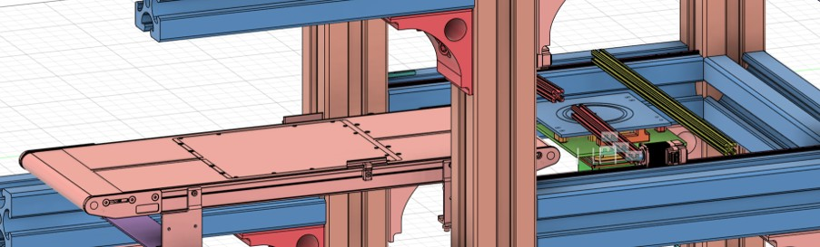
Figure 8: conveyor belt for sending packages between the chute and the hospital room.
The final version (Figure 9) is wider to accommodate larger multi-rotor drones. I also made the switch to extended open gusset brackets (shown in green and in Figure 10) as they are reinforced to limit sway for improved structural stability than standard corner brackets (such as those seen in Figure 7). Acrylic doors (shown in red and in Figure 11) were added to house the conveyor belt and avoid damage from external factors.
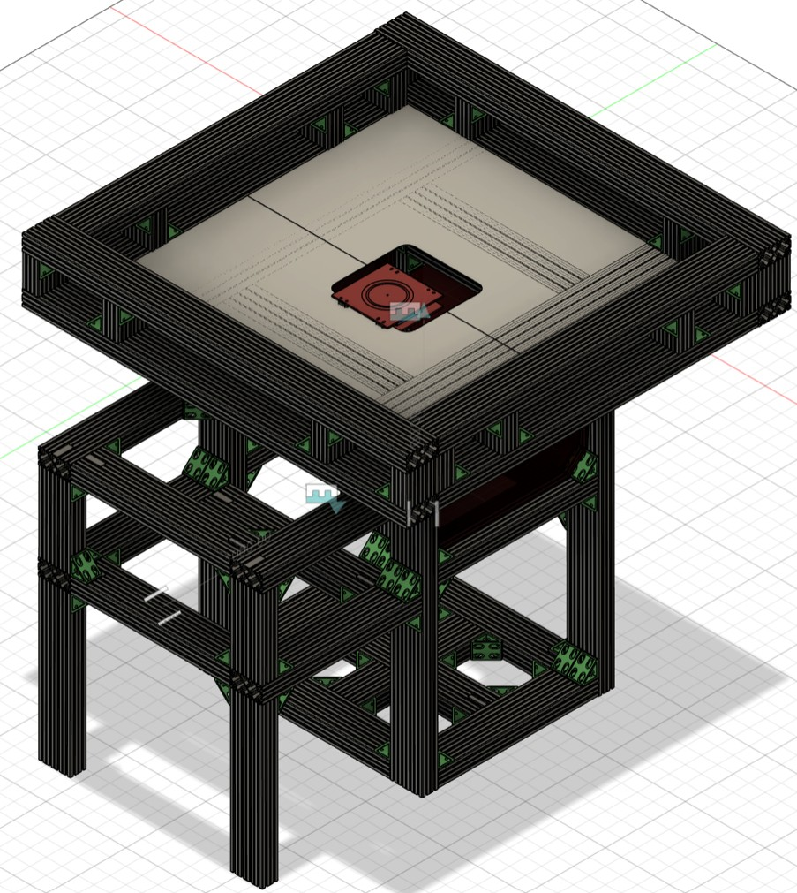
Figure 9: vertiport version 4 (final).
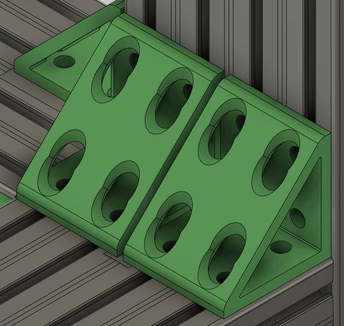
Figure 10: a pair of extended open gusset brackets.
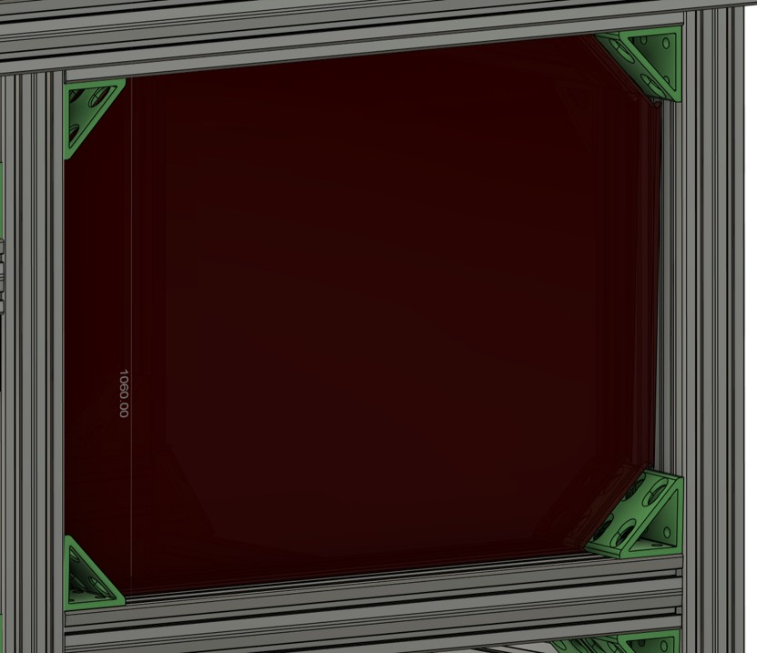
Figure 11: acrylic doors shielding the conveyor belt and payloads.
Static stress tests performed in Fusion on this final subsystem B design confirmed that the vertiport is able to support the maximum payload mass of 10kg. This was then 3D printed for physical tests which verified the results from Fusion.